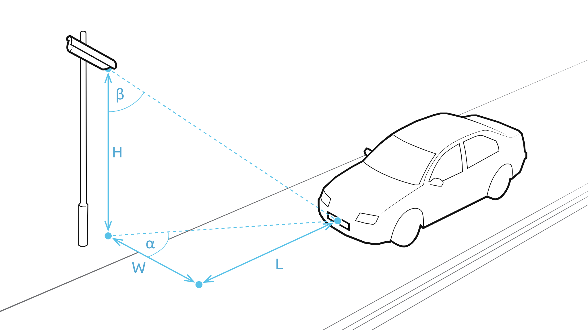

Konfiguracja kamery ANPR¶
Wersja PL 4.0.3 wydana dnia 16 lut 2025.

Procedura instalacji i optymalnego ustawiania kamery ANPR, dzięki której wyniki działania algorytmów ANPR i MMR będą najwyższej jakości.
Spis treści
Dodatki
Wersja PL 4.0.3 wydana dnia 16 lut 2025.
Procedura instalacji i optymalnego ustawiania kamery ANPR, dzięki której wyniki działania algorytmów ANPR i MMR będą najwyższej jakości.
Spis treści
Dodatki